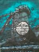
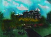
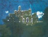
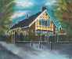
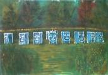
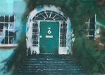
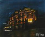
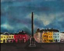

-
The Telescope
photos/No.003-TheTelescope61_44cm.jpg
Birr Telescope our largest gateway to heavens for 100 years. Now portrayed beautifully as a batik which shall remain in our memories.

-
Castle in the Spring
photos/No.019CastleintheSpringcm63_41.jpg
The colours of springtime, brighten the grey background of the large castle walls. This beautiful image of Birr Castle reflects the wonderful garden and flowers surrounding the castle keep.

-
Birr Castle at Night
photos/No.004-BirrCastleatnight49_64cm.jpg
Even in darkness, the shiny walls reflect the calm moonlight, brightening the large stones even during the darkest nights.

-
Oxmantown Hall
photos/No.013-OxmantownHall41_51cm.jpg
The centre of arts and culture of Birr town. This painting reflects the colourful architecture and design of this wonderful building.

-
The Group of Face Statues
photos/No.011-TheGrupoffacestatues41_61cm.jpg
In Birr Castle grounds, one can find this astonishing sculputre. The group of faces carved in stone face inside the circle, inspiring union and collaboration.

-
Georgean Door
photos/No.012-GeorgianDoor27_39cm.jpg
This beautiful design of the Georgian door is complemented by the green overgrowth surrounding the edges. The bright sunlight shines through the top glass reflecting the shiny rays in the shape of the arc.

-
Bridge House Tullamore
photos/No.023BridgeHousecm32_39.jpg
This luxurios hotel displays its slendor, shining brightly the dark streets surrounding it.

-
Waterfall
photos/No.020Waterfallcm42_53.jpg
The calm sound of the Camcor park Waterfall inspires self reflection in front of the large Church. Bringing peace and hope to the passers by.

-
The Square
photos/No.021TheSquarecm42_61.jpg
The busy Birr town square is surrounded by colourful old buildings. The large column stands tall watching over the town, as the rain coulds approaches.
